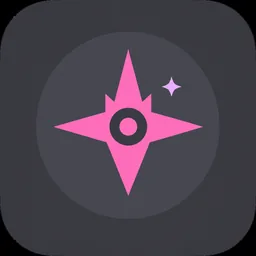
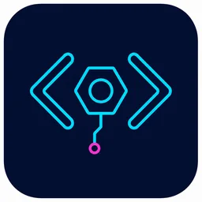
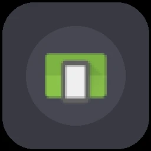
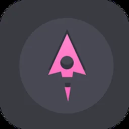
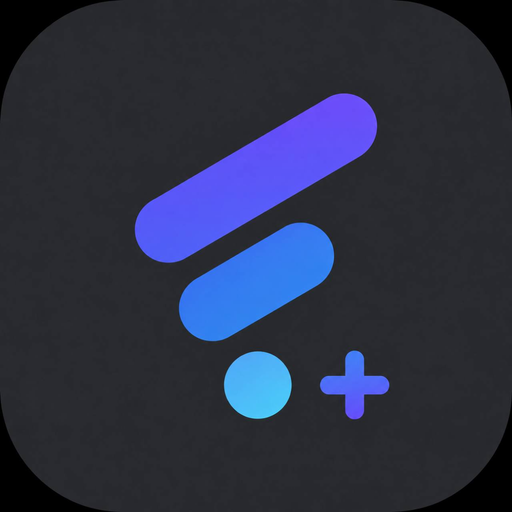
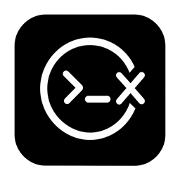

NekoStar资源发现、搜索、网页与本地工具的跨端入口。 PRIVATE RELEASE↗01 / NETWORK
独立发布，统一体验。
根站只负责导航，不替项目页伪造版本或下载。每个入口都指向它自己的发布域名。
02 / PROJECTS
当前项目网络
12 个独立入口

NekoStar Developer Tools面向双端开发流程的 Flutter + Rust 工具集。 DEVELOPMENT STATUS↗
Android SimulatorWindows 端 Android 运行环境与应用工作台。 PRIVATE RELEASE↗
Game LauncherGalgame 与多引擎游戏的跨端启动、管理与打包入口。 PRIVATE RELEASE↗
FlClashPlus面向授权协作者的私有增强构建与版本入口。 PRIVATE RELEASE · GPL-3.0↗
CodexMax连接 ChatGPT、插件、本地服务与本地 Codex 的双端客户端。 PRIVATE · SOURCE-AVAILABLE↗03 / LATEST NOTE
LanzouPlus：从空源开始，重新掌控自己的规则库
第一篇项目笔记，解释空源、原生轻量和可验证发布的产品边界。
04 / SUPPORT
让项目继续生长。
感谢你对开发、构建、发布和长期维护工作的支持。请使用你信任的扫码工具识别二维码。